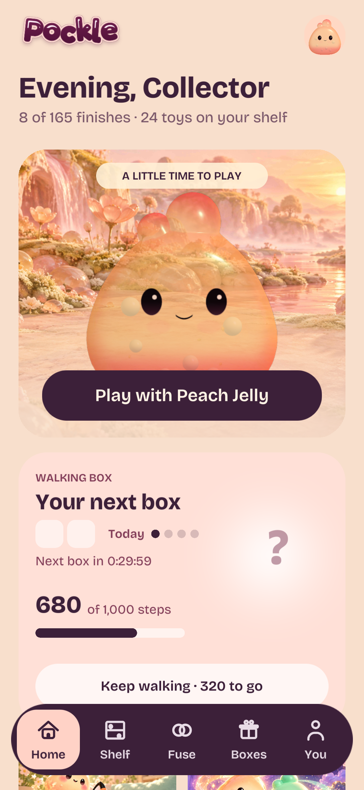
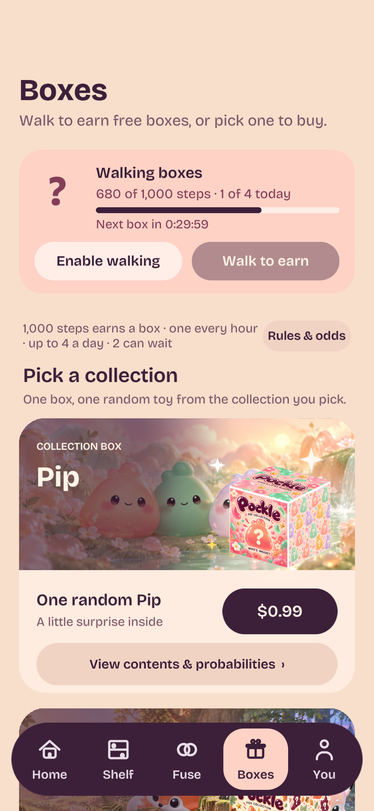
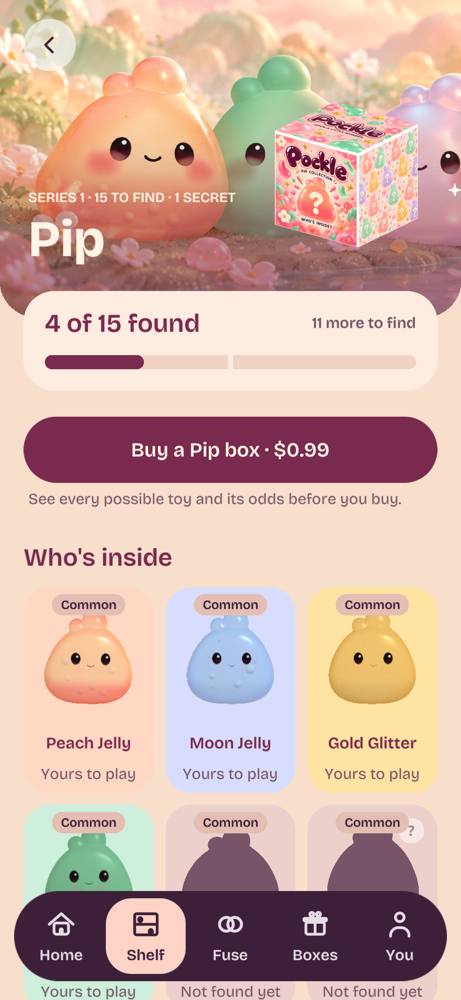
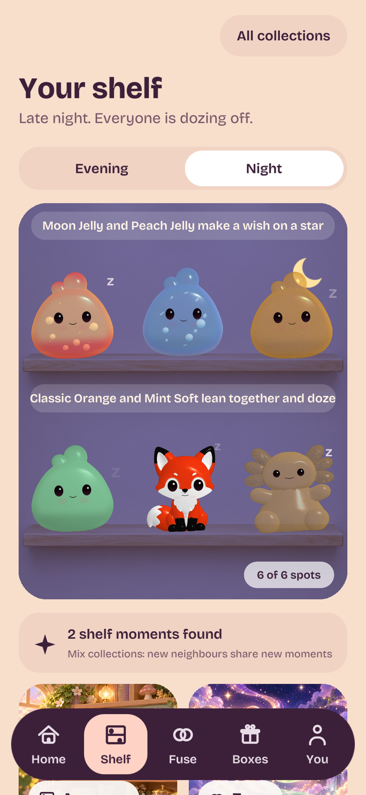
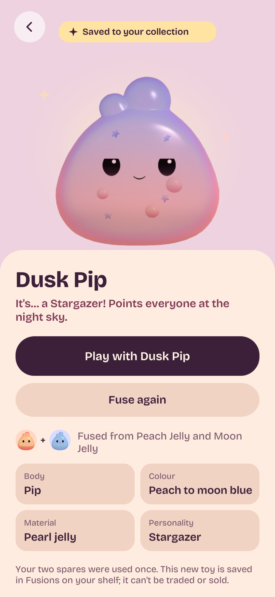
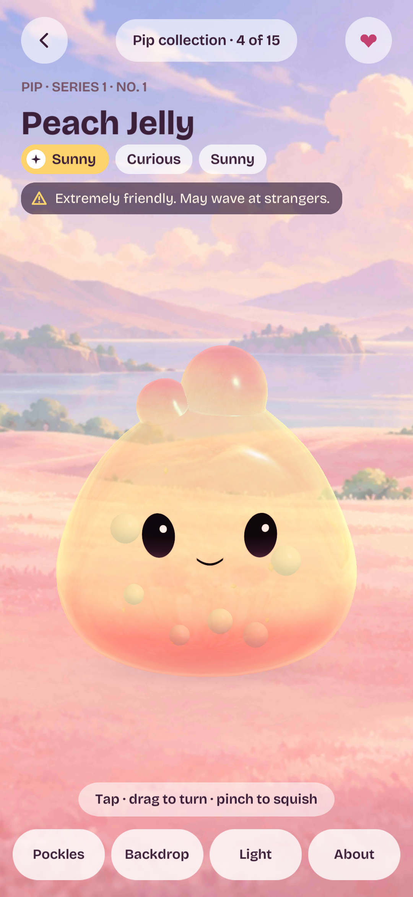
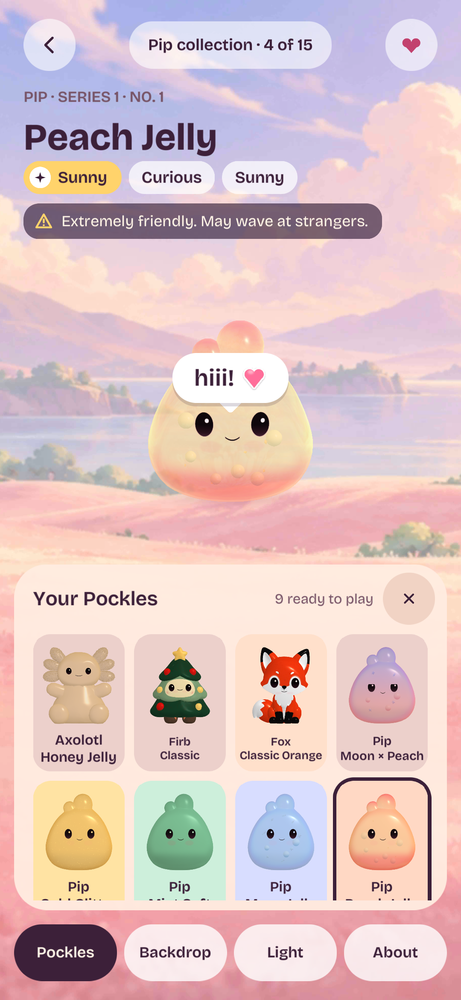
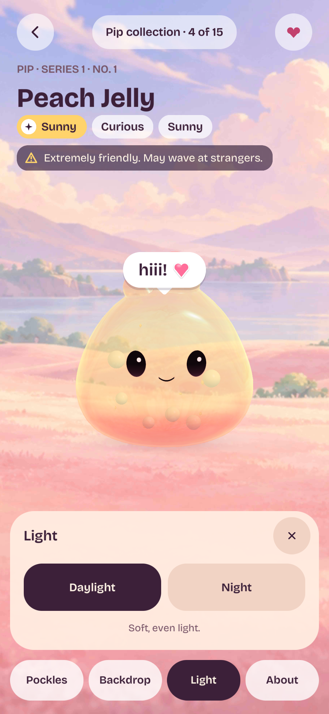
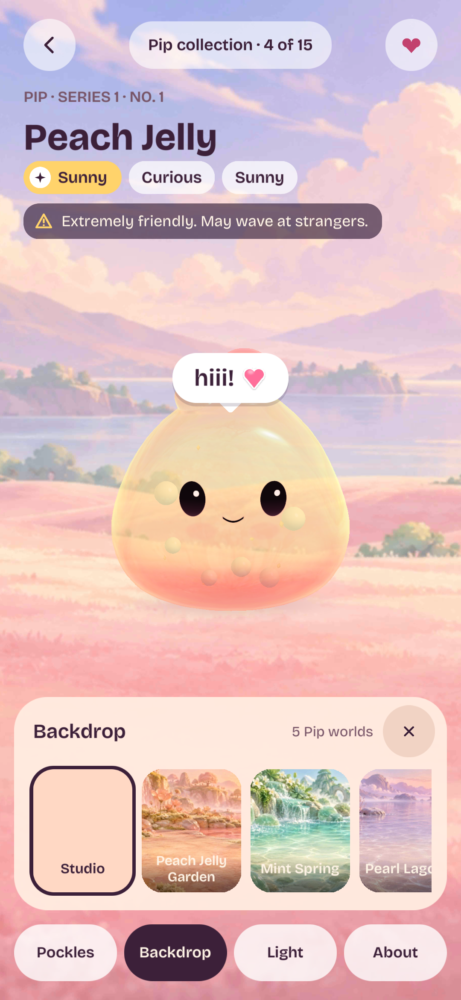
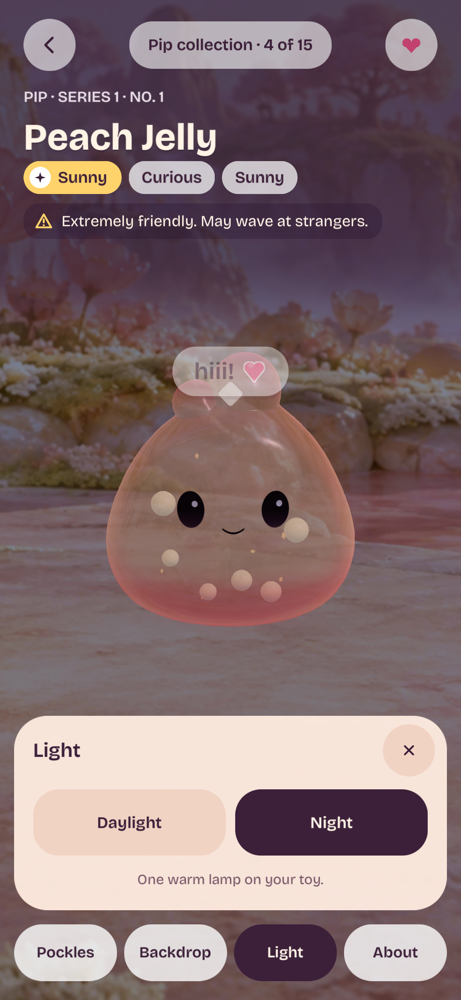

Home
Warm peach, a painted toy world, and walking progress.

Boxes
Collection artwork, localized purchase actions and contents/odds entry.

Collection
Buy a box above the rarity-labeled variants.

Shelf
Your saved toys on their shelf.

Fusion result
Play directly after the two spares are saved as spent.

Play
Four labeled controls below the toy.

Your Pockles
Owned toys across collections and saved fusions, with a scrolling chooser.

Lighting
Daylight and Night only. Old Golden Hour settings become Daylight.

Backdrops
Choose the collection’s painted environment.

Night world
Painted scenery and the dark lighting choice.